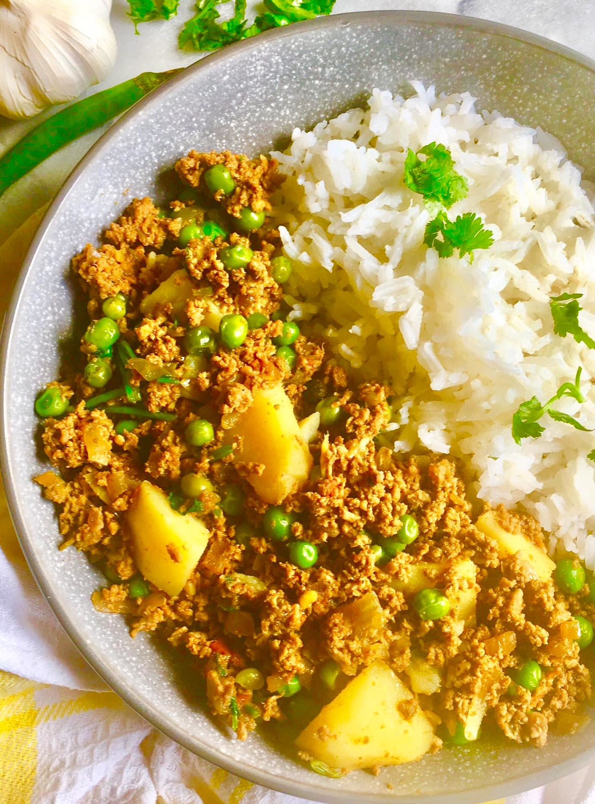

Mince Curry
Homepage

Description
This is the recipe for a delicious Cape Malay style mince curry. A hearty and wholesome dish with a dash of heat that the whole family can enjoy
Ingredients
- 400g raw lean beef mince
- 1 tbs salt
- 100ml olive olive
- 100g chopped brown onion
- 2 tbs medium strength curry powder
- 200g white rice
- selected spices and leaves
Cooking Steps
- Heat oil in a large pot
- Braze onions in the heated oil
- Add salt and selected spices and leaves to the raw mince and mix together
- Braze mince in the onions
- Add boiling water and curry poweder to the mince
- Cook on medium heat until dry
- Cook the rice in a separate medium pot
- Serve mince atop the cooked rice
Best served with sambal or a light salad. Enjoy!